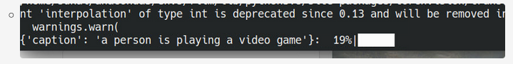
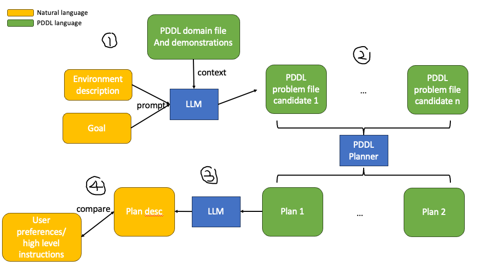
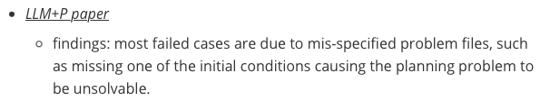
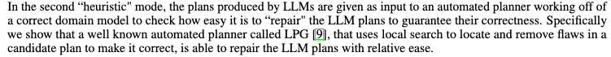
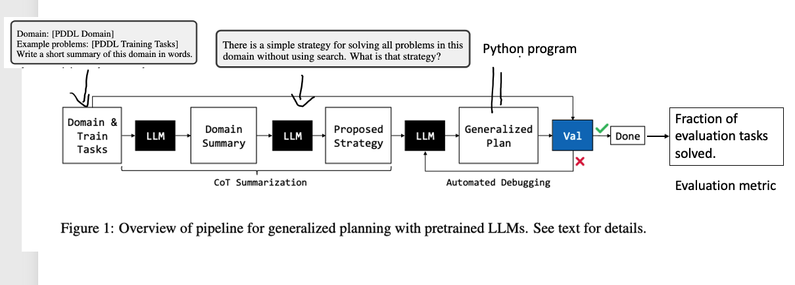
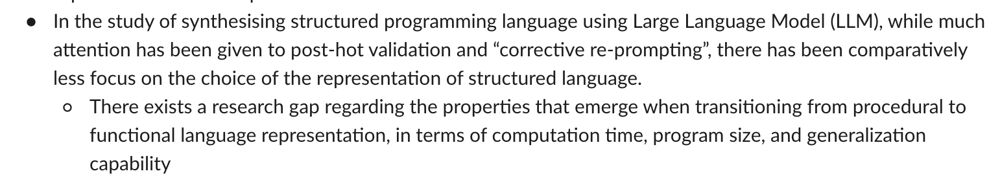
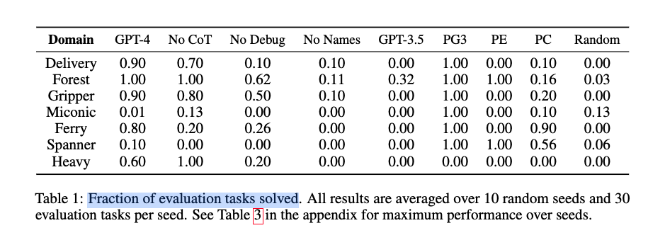

Previous Work Review#
- we have three things
- pitfall of LRS paper
- ALFRED project
- Visualising language instructions as lines project
You need password to access to the content, go to Slack *#phdsukai to find more.
Part of this article is encrypted with password:
[TOC]
TODO List#
- continue the Visualising language instructions as lines project
- find available visual captioner, allows for fine-tuning
- revise pitfall of LRS paper
ALFRED project progress#
- so far, we haven’t yet found usable video captioner.

Visualising language instructions as lines project progress#
- I need to annotate dataset, that is to draw lines based on the instructions. I shall continue using Goyal’s dataset
What others didn’t do#
- exploration -> generate environment description
- the environment description + goal -> PDDL problem file.
- we also have low-level instructions -> can we do anything to link low-level instructions with PDDL problem files?
- ok, we have generated plans, the plan can be translated back to natural language, and we can match the natural language plan with the ground truth low-level instructions
- we can do over-generate-and-filter procedure
- how use the generated plan in a real control policy (future work).
Future work from the papers#
- Translating natural language to planning goals with large language models
- previous work has noted that LLMs can be sensitive to the prompts used. it is possible that other prompt structures may give better performance.
- Subtask analysis is not feasible because the LLM is an end-to-end model outputting a text answer
- the subtask tests cannot unambiguously confirm if an LLM succeeds on a given subtask as performance is always contigent upon hte LLM being able to output a text answer.
- LLM+P paper
- findings: most failed cases are due to mis-specified problem files, such as missing one of the initial conditions causing the planning problem to be unsolvable.
- suggested direction to further extend the LLM+P
- enabling the LLM to auto-detect when and how to apply LLM+P
- reducing LLM+P’s dependency on information by humans, potentially involving finetuning.
- LLM for constrained language planning
- limitation: we do not improve LLMs themselves due to the difficulty of fine-tuning LLMs.
Pipeline of combing LLM with PDDL#

The “problem” that we want to tackle#
- increasing validity and trustiness of the output
- filtering out mis-specified problem files (it is the limitation from LLM+P paper)
- adapting to user preferences / user constraints
- (potential) we may need to deal with the ambiguity coming from partially observed environment description

more general problem
- Although LLM may show logical reasoning ability[2], they are error-prone[1], thus a separated PDDL planner helps
- LLM is difficult to get finetuned due to closed-sourced LLM APIs, thus it requires post-hot methods to validate the output and then do “Corrective Re-prompting”
- but we don’t know what is the most suitable validation and re-prompting method for the LLM+PDDL combo
- We do not know what kind of the prompt design and what kind of the output is the most suitable. As shown in 3, the author did not know why CoT, (meaning we ask the LLM explain the process), could hamper the plan quality.
- In the study of synthesising structured programming language using Large Language Model (LLM), while much attention has been given to post-hot validation and “corrective re-prompting”, there has been comparatively less focus on the choice of the representation of structured language.
- There exists a research gap regarding the properties that emerge when transitioning from procedural to functional language representation, in terms of computation time, program size, and generalization capability
example of methods the generated plan

Why I want to avoid ALFRED env#
- I cannot find a good off-the-shelf visual captioner – that computer vision thing may require significant time and efforts.
- a benchmark that only contains text and planning questions may be better .
https://arxiv.org/pdf/2305.11014.pdf work#
-
The central idea of generalized planning is to utilize the capabilities of Language Models (LLMs) to generate “policies”, represented as programming code, and evaluate if this “policy” can effectively and accurately solve a set of tasks within a specific domain.
The author’s motivation stems from the recognition that LLMs are often criticized for their difficulties in basic reasoning and planning. Consequently, the author seeks to explore whether LLMs can function as generalized planners by investigating their potential to generate policies that address a range of tasks within a given domain.
Pipeline of the approach


results

Advantages of extending https://arxiv.org/pdf/2305.11014.pdf work#
- they use very little number of training examples, meaning that we do not need to do lots of data annotation works
- We can conduct the same series of experiments and analyse the distinctions between generating Python programs and generating Haskell programs.
- We know that functional programming and procedural programming uses different thinking modes. Thus it is worth investigating how LLM behave under this different thinking modes. The investigation can provide insights into the behaviour of black-box large language models.
- the work is essentially about utilising LLM to do planning, which is linked to our thesis topic – utilising knowledge from language models in agent decision making processes
task example#
- domain file
llm_genplan/envs/assets/pddl/pg3/heavypack.pddl
|
|
- problem file
llm_genplan/envs/assets/pddl/pg3/heavypack/seed0/task0.pddl
|
|
- some important methods in the source code
get_genplan_from_llmandrun_promptinllm_genplan/genplan.py
**example LLM response **
- in
llm_genplan/llm_cache/pg3-heavypack_1_chatgpt4
|
|
Paper Reading Notes#
-
ImageBind One Embedding Space to Bind Them All
- Author: Rohit Girdhar et. al.
- Publish Year: 9 May 2023
- Review Date: Mon, May 15, 2023
-
- Author: Alexander Kirillov et. al.
- Publish Year: 5 Apr 2023
- Review Date: Sun, May 21, 2023
-
Natural Language Decomposition and Interpretation of Complex Utterances
- Author: Jacob Andreas
- Publish Year: 15 May 2023
- Review Date: Mon, May 22, 2023
-
Distilling Script Knowledge From Large Language Models for Constrainted Language Planning
- Author: Siyu Yuan et. al.
- Publish Year: 18 May 2023
- Review Date: Mon, May 22, 2023
-
LLM+P Empowering Large Language Models With Optimal Planning Proficiency
- Author: Bo Liu
- Publish Year: 5 May 2023
- Review Date: Mon, May 22, 2023
-
Translating Natural Language to Planning Goals With LLM
- Author: Yaqi Xie et. al.
- Publish Year: 10 Feb 2023
- Review Date: Mon, May 22, 2023
-
HuggingGPT: Solving AI tasks with ChatGPT and its Friends in Hugging Face
- Author: Yongliang Shen et. al.
- Publish Year: 2 Apr 2023
- Review Date: Tue, May 23, 2023
-
Generalised Planning in Pddl Domains With Pretrained Large Language Models
- Author: Tom Silver et. al.
- Publish Year: 18 May 2023
- Review Date: Tue, May 23, 2023
-
Tree of Thoughts: Deliberate Problem Solving with LLM
- Author: Shunyu Yao et. al.
- Publish Year: 17 May 2023
- Review Date: Wed, May 24, 2023
-
PG3 Policy Guided Planning for Generalised Policy Generation
- Author: Ryan Yang et. al.
- Publish Year: 21 Apr 2022
- Review Date: Wed, May 24, 2023
-
Language Models Meet World Models: Embodied Experiences Enhance Language Models
- Author: Jiannan Xiang et. al.
- Publish Year: 22 May 2023
- Review Date: Fri, May 26, 2023
-
Neural Machine Translation for Code Generation
- Author: Dharma KC et. al.
- Publish Year: 22 May 2023
- Review Date: Sun, May 28, 2023
-
- Author: Junnan Li et. al.
- Publish Year: 15 Feb 2022
- Review Date: Mon, May 22, 2023
-
Dissociating Language and Thought in Large Language Models a Cognitive Perspective
- Author: Kyle Mahowald et. al.
- Publish Year: 16 Jan 2023
- Review Date: Tue, Jan 31, 2023